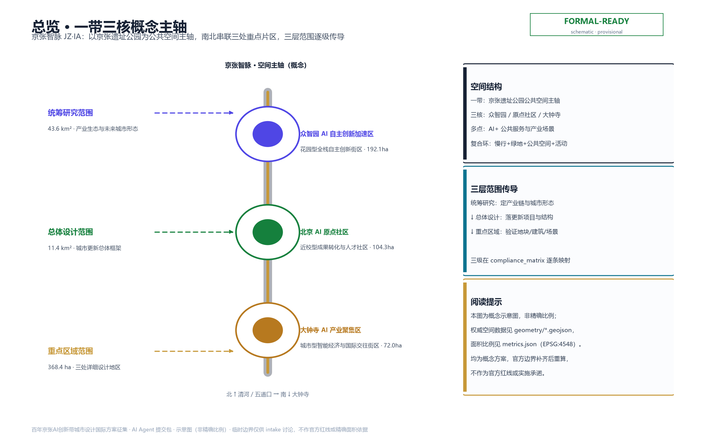
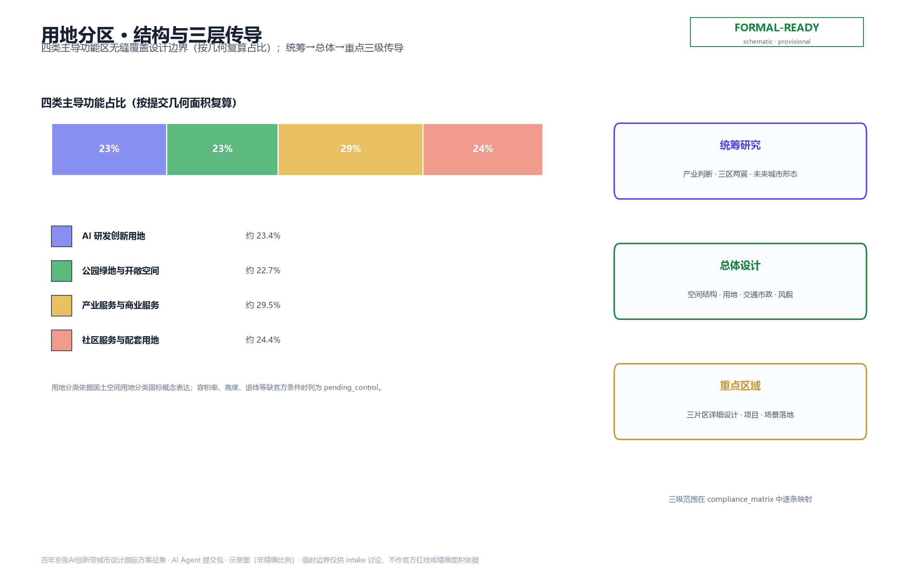
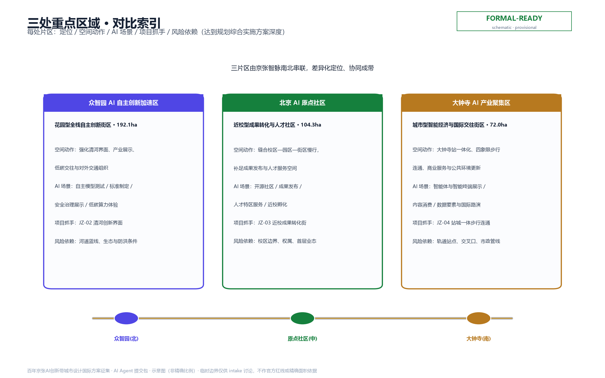
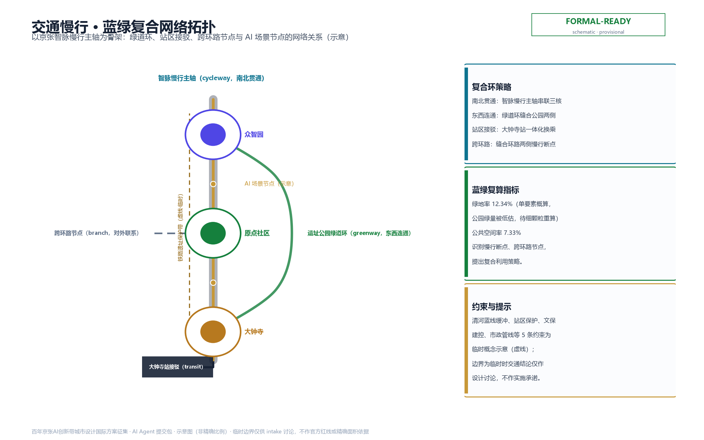
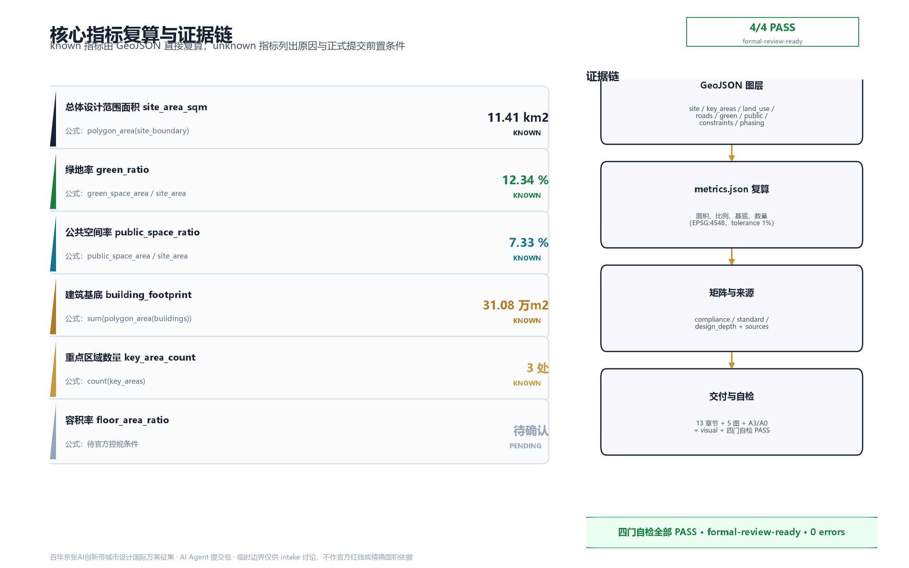

京张智脉·百年京张AI创新带城市设计提案
以京张遗址公园为历史与公共空间主轴，以众智园、北京AI原点社区、大钟寺三处重点片区为创新锚点，提出一带三核、蓝绿慢行复合环的空间组织与AI原生场景体系，回应公告三层范围与面向智能体任务书的六项必选任务。
京张智脉·百年京张AI创新带城市设计提案
设计依据与资料清单
本 formal 方案以北京市规划和自然资源委员会海淀分局发布的《百年京张AI创新带城市设计国际方案征集资格预审公告》为第一依据 [source:OFFICIAL-ANNOUNCEMENT]，并以 brief/site-package/ 中的设计任务书、允许设计空间、枚举、指标区间、标准与 schema 为机器可读依据 [source:SITE-PACKAGE]。AI agent 在生成方案前已读取 design_brief.json、allowed_design_space.json、sources.json、enums/、ranges/、schemas/、data/source_registry.json 与 data/processed/agent_fact_pack.md [source:PROCESSED-FACT-PACK]，并依据 data/source_registry.json 的可用性分级区分 formal-ready、背景-only 与 provisional-only 资料 [source:SOURCE-REGISTRY]。
资料登记口径如下：官方公告、任务书与用地分类等国标为 formal-ready；临时边界与三处重点片区 polygon 为 provisional-only，仅用于方案生成、离线可视化、intake 自检与设计讨论，不得作为 official redline、审批依据或精确面积依据 [source:BOUNDARY-SOURCE]、[source:KEY-AREA-SOURCE]。所有设计判断均拆分为可追溯来源、可复算指标、可校验图层与可人工复核假设，避免把新闻图、OSM、文字四至或 bbox 当作权威边界。
data/processed/agent_fact_pack.md 是本方案的阅读导航层，不是新的权威来源，所有事实判断仍回到 [source:OFFICIAL-ANNOUNCEMENT]、[source:AGENT-TASKBOOK]、[source:SOURCE-REGISTRY] 与 [source:SITE-PACKAGE]。本公告要求方案达到控制性详细规划的城市设计深度与规划综合实施方案的城市设计深度 [standard:PROJECT-OFFICIAL-ANNOUNCEMENT]、[standard:MOHURD-CONTROL-DETAILED-PLANNING]，因此正文叙述不能替代 GeoJSON、指标表、A3 文册、A0 展板与 HTML 电子展示成果。

本次提交采用维护者登记的临时粗略边界，所有空间结构、场景、项目与指标均按"可讨论、可复核、可替换官方边界后重算"的原则写入 [data:geometry/site_boundary.geojson#SITE-001]。当官方边界与重点区 polygon 更新后，agent 必须重新运行脚手架、自检与图纸/HTML 生成，不能只替换单个文件。边界与重点区域的可读解释对应 [data:geometry/site_boundary.geojson#SITE-001]、[data:geometry/key_areas.geojson#PROV-KEY-001] 与 [metric:site_area_sqm]、[metric:key_area_count]，读者可从正文回到 GeoJSON 查看边界来源、从 metrics 查看面积复算、从 sources 查看资料来源。
三层范围工作框架
方案按公告确定的三个层次组织工作 [standard:PROJECT-OFFICIAL-ANNOUNCEMENT]。统筹研究范围面向 43.6 平方公里的 AI 产业生态、战略定位、创新链与未来城市形态；总体设计范围面向 11.4 平方公里京张遗址公园周边 1–2 公里城市地区与产业区，形成城市更新总体框架、产业空间布局、交通市政支撑与城市风貌控制；重点区域范围面向 368.4 公顷三处详细设计地区，明确功能业态、建筑规模、拆改留分类、公共空间连通与交通组织 [depth:three_level_scope_framework]。三层范围在 compliance_matrix.json 中逐条映射，保证公告 1.3、1.4、1.5 与 agent.1–agent.6 必选任务都有章节、图层、指标、图纸与 HTML 证据。
三层工作不是割裂的图纸集合：统筹研究决定产业链与城市形态判断，总体设计把判断落实到更新项目、空间结构与设施承载，重点区域详细设计验证具体地块、建筑、交通、公共空间与 AI 应用场景的可实施性 [depth:overall_spatial_structure]。空间证据以 [data:geometry/site_boundary.geojson#SITE-001] 与 [data:geometry/key_areas.geojson#PROV-KEY-001] 为准，任务依据以 [standard:PROJECT-OFFICIAL-ANNOUNCEMENT] 为准。

本方案建议的总体概念为"京张智脉"：以京张遗址公园为历史与公共空间主轴，以众智园、北京 AI 原点社区、大钟寺三处重点片区为创新锚点，以高校、企业、社区与轨道站点为日常网络，形成"一带三核、多点场景、蓝绿慢行复合环"的空间组织 [depth:existing_conditions_diagnosis]。这里的"一带"不是额外画出的新红线，而是把公告中的三层范围转译为工作方法；"三核"对应三处重点区域；"多点场景"对应 AI+ 公共服务、产业服务与城市生活的可运营节点；"复合环"对应慢行、绿地、公共空间与活动路线的联动。
| 层级 | 设计问题 | 方案回答 | 数据落点 | | --- | --- | --- | --- | | 统筹研究范围 | AI 产业生态与未来城市形态如何组织 | 建立"高校策源—开源协作—企业转化—公共体验—国际传播"的创新链 | compliance_matrix.json、standard_matrix.json | | 总体设计范围 | 产业空间、城市更新、交通市政与风貌如何落图 | 用地、建筑、道路、绿地、公共空间与分期图层共同表达 | [data:geometry/land_use.geojson#LU-001]、[data:geometry/roads.geojson#ROAD-001] | | 重点区域范围 | 三处片区如何达到详细设计深度 | 分别提出定位、空间动作、AI 场景与实施依赖 | [data:geometry/key_areas.geojson#PROV-KEY-001]、#PROV-KEY-002、#PROV-KEY-003 |
统筹研究范围产业与未来城市研究
统筹研究范围的核心任务是构建世界级 AI 创新生态体系 [source:AGENT-TASKBOOK]。方案梳理海淀高校院所、头部企业、算力算法数据要素、孵化平台、上市企业与科技服务资源，提出 AI 创新链、产业链、人才链与城市服务链的空间协同框架，并面向智能体任务书回应"三大定位、五大功能、三区两翼"协同 [standard:PROJECT-AGENT-OPEN-CALL-TASKBOOK]。三大定位为百年京张文化带、都市 AI 生活体验带、AI 融合创新带；五大功能为 AI 全栈自主创新体系、世界级 AI 创新生态、AI+ 场景赋能新范式、智能化 AI 活力城市、AI 治理全球话语权；三区两翼指众智园 AI 自主创新加速区、北京 AI 原点社区、大钟寺 AI 产业集聚区，以及中关村科技服务翼、小月河场景赋能翼。
命名与视觉识别方面，本方案提出主名称"京张智脉"（英文 JingZhang Intelligence Artery，简称 JZ·IA），命名体系以"脉"为核心意象——既呼应京张铁路作为中国近代工程"动脉"的历史，也隐喻数据、人才、场景在创新带中的流动 [standard:PROJECT-AGENT-OPEN-CALL-TASKBOOK]。Logo 方向建议为：以詹天佑"人"字型铁路折返线为母题，演化为一条由历史铁轨渐变为数据神经流的连续曲线，分别串联清河、五道口、大钟寺三节点；色彩采用"铁轨灰蓝 + 智脉靛 + 遗址公园绿"三色体系。所有字体、图形与色彩方案均为概念建议，正式落地须取得清权字体与无侵权校验。
全球 AI 创新生态案例方面，本方案梳理 6 个可借鉴对象，并逐一提炼"可转化机制"：一是加拿大多伦多 MaRS Discovery District，以"研究—孵化—商业化"物理聚合降低转化摩擦，**对京张的转化要点**是"高校院所—孵化平台—龙头企业同址分层布局"，呼应原点社区近校转化街；二是英国东伦敦科技城（East London Tech City），以城市更新地块承载 AI 与金融科技集群，**转化要点**是"以存量更新释放创新空间、避免新建园区孤岛"，回应总体设计范围低效空间识别；三是法国 Station F，以单一巨型孵化器形成开发者密度与活动品牌，**转化要点**是"以高密度公共客厅型设施沉淀开发者社区与年度活动品牌"，对应大钟寺国际路演客厅与年度四节；四是新加坡 AI Singapore 与榜鹅数字园区（Punggol Digital District），以国家级 AI 计划与产城融合新区结合，**转化要点**是"国家计划—场景开放—产城生活配套一体化"，对应众智园标准治理展示与人才服务配套；五是美国波士顿肯德尔广场（Kendall Square），以 MIT 源头创新与生物医药/AI 交叉形成高密度创新街区，**转化要点**是"锚点机构 + 高密度街区 + 职住商服平衡"，强化五道口—清华区域校城融合；六是以色列特拉维夫，以军民转化与创业密度形成敏捷创新生态，**转化要点**是"低摩擦注册、种子资本与社区运营联动"，为运营机制设计提供参照。综合六案例，提炼五条可迁移机制：物理聚合降摩擦、存量更新载产业、公共客厅聚开发者、产城配套留人才、轻量政策育创业。上述案例与机制均作为"经验转译"素材，不构成对本地招商、投资或政策的确定承诺 [source:AGENT-TASKBOOK]。
未来城市形态研究回答人工智能如何改变工作、生活、社交、学习、交通与公共服务，把 AI 交通系统、连续绿色空间、创新服务设施与国际化生活工作氛围落实为可定位的功能区、节点、廊道与场景，而非泛泛描述技术愿景 [depth:overall_spatial_structure]。全球 AI 创新活动、开发者社区、开放场景与朝圣路线均写为"概念建议/参考方案/可供专业团队深化研究"，不写成已确定的政府活动或实施安排。
总体设计范围城市更新与控规深度城市设计
总体设计范围要求达到控制性详细规划的城市设计深度 [standard:MOHURD-CONTROL-DETAILED-PLANNING]。方案提出城市更新总体空间结构、低效空间识别、更新项目清单、实施政策建议、产业功能比例、空间组织模式、建筑总规模与综合承载能力评估。geometry/land_use.geojson 完整覆盖设计边界且无重叠 [data:geometry/land_use.geojson#LU-001]，geometry/buildings.geojson 表达更新建筑基底或保留建筑基底 [data:geometry/buildings.geojson#BLDG-001]，geometry/roads.geojson 表达微循环、慢行与轨道接驳关系 [data:geometry/roads.geojson#ROAD-001]，metrics.json 复算核心面积、比例与图层数量 [metric:building_footprint_area_sqm]、[depth:land_use_layout]。
总体设计支撑交通、轨道、市政与配套设施，围绕轨道站点一体化、道路微循环、非机动车停放、停车供给、创新服务平台、人才生活服务、新型基础设施、分布式能源与端侧算力提出空间布局与实施路径 [depth:traffic_rail_slow_parking]、[depth:municipal_new_infrastructure]。涉及建筑高度、开发强度、道路红线、退线与设施标准的内容，若尚无官方控制条件，一律写为"待正式控规条件确认"，不以 agent 推测值冒充审定指标 [depth:development_intensity_controls]、[depth:height_massing_character]。
总体设计还必须支撑交通、轨道、市政与配套设施。方案应围绕轨道站点一体化、道路微循环、非机动车停放、停车供给、创新服务平台、人才生活服务、新型基础设施、分布式能源和端侧算力提出空间布局和实施路径。涉及建筑高度、开发强度、道路红线、退线和设施标准的内容，若尚无官方控制条件，应写为"待正式控规条件确认"，不得以 agent 推测值冒充审定指标。
重点区域详细设计
重点区域详细设计是必选项 [standard:PROJECT-OFFICIAL-ANNOUNCEMENT]。众智园 AI 自主创新加速区围绕国家人工智能平台、全栈自主创新、标准制定、安全治理、产业展示、对外交通、清河文化、低碳绿色创新交往环境与绿色空间 AI 场景提出详细方案 [data:geometry/key_areas.geojson#PROV-KEY-001]。北京 AI 原点社区围绕近校创新、成果孵化转化、人才特区、开源体系、品牌活动、建筑拆改留、成果展示发布、居住生活配套、校区园区慢行联系与轨道站点一体化提出详细方案 [data:geometry/key_areas.geojson#PROV-KEY-002]。大钟寺 AI 产业聚集区围绕领军企业、智能体、智能终端、内容消费、数据要素、数字资产、商业服务、规划绿地复合利用、大钟寺站一体化与路口四象限步行连通提出详细方案 [data:geometry/key_areas.geojson#PROV-KEY-003]。
三处重点区域详细设计必须引用上述 feature，并由 [depth:three_key_area_detailed_design] 检查是否达到规划综合实施方案深度。若只描述"打造示范区"而没有功能、建筑、交通、公共空间与实施项目证据，视为未完成。

| 重点片区 | 设计定位 | 空间动作 | AI 产业与运营场景 | 证据引用 | | --- | --- | --- | --- | --- | | 众智园 AI 自主创新加速区 | 花园型全栈自主创新街区 | 强化清河界面、产业展示、低碳创新交往与对外交通组织；以绿色空间承载开放测试与标准治理展示 | 自主模型测试、标准制定工作坊、安全治理展示、低碳算力体验 | [data:geometry/key_areas.geojson#PROV-KEY-001]、[depth:three_key_area_detailed_design] | | 北京 AI 原点社区 | 近校型成果转化与人才社区 | 组织校区、园区、街区慢行缝合；补足成果发布、人才服务、居住生活与开源协作空间 | 开源社区、成果发布、人才特区服务、近校孵化 | [data:geometry/key_areas.geojson#PROV-KEY-002]、[source:AGENT-TASKBOOK] | | 大钟寺 AI 产业聚集区 | 城市型智能经济与国际交往街区 | 围绕大钟寺站一体化、四象限步行连通、商业服务与重点企业公共环境更新 | 智能体与智能终端展示、内容消费、数据要素与国际路演 | [data:geometry/key_areas.geojson#PROV-KEY-003]、[metric:key_area_count] |
AI 创新生态、人才画像与 AI+ 场景
方案建立面向 AI 人才与企业的空间需求画像，覆盖研发办公、开源协作、成果发布、企业服务、人才居住、社交学习、消费生活、运动休闲与国际交往。AI+ 场景围绕公告提出的交通、服务、消费、医疗、教育、法律、生活服务等方向，形成产业发展场景与 AI 赋能城市功能场景 [source:AGENT-TASKBOOK]。每个场景说明服务对象、空间位置、数据来源、隐私边界、人工复核机制与运营主体。
AI 场景必须落到空间与治理边界：公共空间场景引用 [data:geometry/public_space.geojson#PUBLIC-001]，慢行与交通场景引用 [data:geometry/roads.geojson#ROAD-001]，开放空间场景引用 [data:geometry/green_space.geojson#GREEN-001] 与 [metric:public_space_ratio]、[metric:green_ratio]。面向智能体任务书要求不少于 10 张 AI 场景卡、不少于 3 个产业测试验证场景与不少于 5 类用户画像 [standard:PROJECT-AGENT-OPEN-CALL-TASKBOOK]。
用户画像（6 类）：一是开源开发者，需求为发布、协作、测试与社区声誉，空间响应为原点社区开源发布厅与公共代码墙；二是初创团队，需求为低成本办公、算力入口与产品试验场，空间响应为众智园共享测试场；三是头部企业访客，需求为展示、商务与国际接待，空间响应为大钟寺国际路演客厅；四是周边居民，需求为通勤、休闲与低扰动更新，空间响应为京张遗址公园慢行环；五是高校师生，需求为成果转化与跨校协作，空间响应为校区—园区慢行缝合；六是城市运营者，需求为公共治理与风险提示，空间响应为城市智能体驾驶舱。六类画像与场景、空间、运营的映射关系如下（运营主体均为概念建议，待正式运营机制确认）：
| 画像 | 核心需求 | 空间响应 | 对应 AI 场景 | 运营主体（概念） | | --- | --- | --- | --- | --- | | 开源开发者 | 发布、协作、测试、社区声誉 | 原点社区开源发布厅、公共代码墙 | 01 开源发布厅、04 AI 慢行导航 | 开源社区运营方 + 属地街道 | | 初创团队 | 低成本办公、算力入口、产品试验场 | 众智园共享测试场、端侧算力驿站 | 02 安全治理沙盒、03 端侧算力驿站 | 孵化平台 + 平台企业 + 专业评测机构 | | 头部企业访客 | 展示、商务、国际接待 | 大钟寺国际路演客厅 | 05 国际路演客厅、08 数据要素会客厅 | 会展运营方 + 商业运营方 | | 周边居民 | 通勤、休闲、低扰动更新 | 京张遗址公园慢行环、生活服务样板街 | 09 生活服务样板街、11 健康服务导航 | 社区运营 + 公共服务机构 | | 高校师生 | 成果转化、跨校协作 | 校区—园区慢行缝合、近校成果转化街 | 07 近校成果转化街、12 文化导览智能体 | 高校技术转移机构 + 校区运营 | | 城市运营者 | 公共治理、风险提示 | 城市智能体驾驶舱 | 06 清河低碳创新廊、10 全球活动周 | 政府运营平台 + 数据治理机构 |
场景卡（12 张）：01 开源发布厅、02 安全治理沙盒、03 端侧算力驿站、04 AI 慢行导航、05 大钟寺国际路演客厅、06 清河低碳创新廊、07 近校成果转化街、08 数据要素会客厅、09 AI 生活服务样板街、10 全球 AI 活动周路线、11 AI 健康服务导航、12 文化导览智能体。每张场景卡按"服务对象—空间落点—人工复核/运营（概念）"展开如下；其中产业测试验证场景不少于 3 个（02 安全治理沙盒、03 端侧算力驿站、11 AI 健康服务导航，均需授权与人工复核）：
| 编号 | 场景卡 | 服务对象 | 空间落点 | 人工复核 / 运营（概念） | | --- | --- | --- | --- | --- | | 01 | 开源发布厅 | 开发者、企业、高校 | 原点社区（PROV-KEY-002） | 开源社区运营方复核发布内容 | | 02 | 安全治理沙盒 | 模型厂商、评测机构 | 众智园（PROV-KEY-001） | 专业评测机构授权 + 人工复核 | | 03 | 端侧算力驿站 | 初创团队、开发者 | 众智园（PROV-KEY-001） | 能源/算力压力测试须专业复核 | | 04 | AI 慢行导航 | 居民、游客 | 京张遗址公园慢行环（ROAD-001/002） | 交通数据人工校验 | | 05 | 国际路演客厅 | 头部企业、国际访客 | 大钟寺（PROV-KEY-003） | 会展运营方 + 版权清权 | | 06 | 清河低碳创新廊 | 企业、市民 | 清河界面（GREEN-001/CONSTRAINT-002） | 生态与防洪条件专业复核 | | 07 | 近校成果转化街 | 高校师生、初创 | 原点社区—校区缝合带（PHASE-002） | 校区技术转移机构运营 | | 08 | 数据要素会客厅 | 数据资产方、内容方 | 大钟寺（PROV-KEY-003） | 数据合规与脱敏复核 | | 09 | 生活服务样板街 | 周边居民 | 公共空间带（PUBLIC-001） | 街道社区运营 + 反馈渠道 | | 10 | 全球活动周路线 | 全球开发者、游客 | 智脉全线（ROAD-002/PHASE-001/003） | 活动安全与公共空间许可复核 | | 11 | 健康服务导航 | 居民、银发群体 | 生活服务带（PUBLIC-001） | 医疗脱敏 + 人工复核 | | 12 | 文化导览智能体 | 游客、学生 | 遗址公园与朝圣地标（GREEN-001） | 文保单位与版权复核 |
所有场景节点进入结构化图层或合规矩阵，便于评审者看到它们与产业、空间与公共利益的关系 [depth:municipal_new_infrastructure]。
agent 生成的 AI 治理建议遵守数据最小化、公开来源、可解释与人工复核原则。城市智能体可辅助识别慢行断点、公共空间热力、设施维护、企业服务需求与活动安全风险，但不能替代规划审批、不能输出未经授权的个人画像、不能声称获得官方实施承诺 [standard:PROJECT-AGENT-OPEN-CALL-TASKBOOK]。
用地、建筑规模与拆改留方案
用地方案依据国土空间调查、规划、用途管制分类等公开标准表达，形成完整、闭合、无缝的用地分区 [standard:MNR-LAND-USE-CLASSIFICATION-GUIDE]。建筑方案区分保留、改造、更新、新建或待确认对象，明确建筑基底、功能、规模、风貌、屋顶、体量与高度控制的建议层级 [depth:retain_renovate_demolish]、[depth:height_massing_character]。若缺少现状建筑、权属、控规与工程条件，方案只能提出方法与待校准清单，不编造拆改留结论 [depth:development_intensity_controls]。
用地分类依据 [standard:MNR-LAND-USE-CLASSIFICATION-GUIDE]，建筑高度、体量、界面与风貌控制由 [depth:height_massing_character] 管理，拆改留方法由 [depth:retain_renovate_demolish] 管理。用地与建筑的主要证据是 [data:geometry/land_use.geojson#LU-001]、[data:geometry/buildings.geojson#BLDG-001] 与 [metric:building_footprint_area_sqm]。
建筑规模与强度指标必须与 metrics.json 和图层一致。若总建筑规模、容积率、建筑高度、建筑密度、绿地率、退线与建筑控制线缺少官方条件，在指标体系中列为 unknown 或 pending_control，不用固定数值制造精确感 [depth:metrics_recalculation]。A3 文册给出更新项目清单与指标复核表，A0 展板把关键空间结构与重点片区表达清楚，HTML 页面提供指标和图层联动查看。
交通、轨道、市政与公共服务设施
交通方案回应公告对轨道站点一体化、道路微循环、慢行断点、对外交通、停车、非机动车停放与绿色交通系统的要求 [standard:PROJECT-OFFICIAL-ANNOUNCEMENT]。重点覆盖北五环、京张遗址公园跨环路节点、五道口、清华东路西口、大钟寺站及重点企业周边交通联系。道路与慢行图层保持在提交边界内，并与公共空间、绿地、产业节点与重点片区相互校核；若提交边界为 provisional，交通结论只能作为临时设计讨论 [data:geometry/roads.geojson#ROAD-001]。
交通与市政专业深度分别由 [depth:traffic_rail_slow_parking] 与 [depth:municipal_new_infrastructure] 约束；图层证据引用 [data:geometry/roads.geojson#ROAD-001]、[data:geometry/public_space.geojson#PUBLIC-001] 与 [data:geometry/constraints.geojson#CONSTRAINT-001]。当道路红线、管线、消防与市政条件缺失时，通过 assumptions 说明待补，而不是把策略写成审定条件 [depth:risk_missing_data]。

市政与公共服务设施覆盖 AI 产业服务设施、创新服务平台、人才生活服务设施、新型基础设施、分布式能源、端侧算力与传统市政设施融合 [depth:municipal_new_infrastructure]。方案说明设施标准、空间布局、服务半径、运营模式和分期实施逻辑。缺少管线、能源、排水、防洪、消防等工程资料时，列为正式深化前置条件 [source:AGENT-TASKBOOK]。
蓝绿空间、公共空间与城市风貌
蓝绿空间方案以京张遗址公园活力带为骨架，统筹清河、小月河、周边高校、企业、社区出行需求，提出南北贯通、东西连通的步道、骑行道与绿色空间体系 [depth:blue_green_public_space]。方案识别慢行断点、上跨环路节点、公园南端与北端景观节点，提出停车、体育、创新交往、科技测试、应用展示与公共服务复合利用策略 [data:geometry/green_space.geojson#GREEN-001]。
蓝绿公共空间由 [depth:blue_green_public_space] 校核，核心证据为 [data:geometry/green_space.geojson#GREEN-001]、[data:geometry/public_space.geojson#PUBLIC-001]、[metric:green_ratio] 与 [metric:public_space_ratio]。城市设计管理办法要求统筹景观风貌、公共空间与建筑控制 [standard:MOHURD-URBAN-DESIGN-MEASURES]。
城市风貌融合京张铁路历史文化、中关村创新文化与 AI 创新文化，利用清华园火车站、北影等文化资源，提出城市基调、建筑风貌、屋顶形态、体量、界面与公共艺术引导 [standard:MOHURD-URBAN-DESIGN-MEASURES]。方案提出导视标识、文化符号、国际传播叙事、AI 朝圣地标与荣誉展示体系，但所有品牌、字体、图像、肖像与企业标识都必须有清权来源 [source:AGENT-TASKBOOK]。
文化叙事上，方案以"京张智脉"统合三层文化：第一层是**京张铁路的"自主自强"工程文化**——詹天佑主持、人字折返线、国人自主勘测施工，是"把命运握在自己手里"的近代开端，空间载体为清华园火车站遗址与沿线历史线位；第二层是**中关村的"科教创新"创业文化**——以高校院所密集、创业密度高、敢于先行为特征，空间载体为五道口—清华周边校城融合地带；第三层是**AI 新文化的"开源协作"全球文化**——以开放、共享、全球参与为特征，空间载体为大钟寺国际客厅、开源发布厅与朝圣路线。三者共用"脉"的意象：从铁轨之脉、人才之脉到数据之脉，形成"从自主到开源"的递进叙事，避免将历史与未来简单并置。该叙事用于导视、公共艺术、活动品牌与对外传播的统一表述 [standard:PROJECT-AGENT-OPEN-CALL-TASKBOOK]。
AI 朝圣地标与荣誉展示节点（4 处，概念建议）：一是"京张人字轨遗址光廊"——以清华园火车站遗址与詹天佑"人"字折返线为母题的夜间光影地标，叙事聚焦"自主自强"，体验为沿遗址的夜游光带与历史讲解站；二是"智源原点厅"——以北京 AI 原点社区为核心的开放荣誉墙与里程碑展示，叙事聚焦"开源协作"，体验为开发者荣誉墙、里程碑时间轴与社区开放日；三是"众智园标准灯塔"——表达全栈自主与安全治理的公共装置，叙事聚焦"标准与安全"，体验为安全治理成果展与标准研讨空间；四是"大钟寺 AI 国际客厅"——服务国际路演与开发者聚会的城市客厅，叙事聚焦"全球传播"，体验为国际路演、开发者聚会与城市天际观景 [depth:blue_green_public_space]。四者均为参考方案，过度娱乐化、网红化或低俗化表达被明确排除 [standard:PROJECT-AGENT-OPEN-CALL-TASKBOOK]。
更新项目清单、实施政策与分期计划
实施方案形成可审查的更新项目清单，说明项目位置、类型、功能、责任主体、依赖条件、实施阶段、风险与评估指标 [depth:renewal_project_list]。政策建议覆盖城市更新统筹实施、空间供给、运营机制、产业服务、公共参与、数据治理与产权协同。geometry/phasing.geojson 以三期表达分期范围——PHASE-001 近期试点（众智园）/ PHASE-002 中期更新（原点社区）/ PHASE-003 长期治理（大钟寺）[data:geometry/phasing.geojson#PHASE-001]、[data:geometry/phasing.geojson#PHASE-002]、[data:geometry/phasing.geojson#PHASE-003]，compliance_matrix 把每个任务与分期和图纸挂接 [depth:phasing_implementation]。
| 项目编号 | 项目名称 | 类型 | 主要依赖 | 证据引用 | | --- | --- | --- | --- | --- | | JZ-01 | 京张遗址公园慢行断点缝合 | 公共空间/交通 | 道路红线、桥下空间、交通组织复核 | [data:geometry/roads.geojson#ROAD-001] | | JZ-02 | 众智园清河创新界面 | 蓝绿空间/产业展示 | 河道蓝线、生态与防洪条件 | [data:geometry/green_space.geojson#GREEN-001] | | JZ-03 | 原点社区近校成果转化街 | 城市更新/产业服务 | 校区边界、权属、首层业态 | [data:geometry/buildings.geojson#BLDG-001] | | JZ-04 | 大钟寺站四象限步行连通 | 轨道一体化/慢行 | 轨道站点、道路交叉口、市政管线 | [data:geometry/public_space.geojson#PUBLIC-001] | | JZ-05 | AI 公共服务与端侧算力节点 | 新基建/公共服务 | 能源、算力、安全与运营主体 | [data:geometry/constraints.geojson#CONSTRAINT-001] | | JZ-06 | 全球 AI 活动周公共路线 | 运营/品牌 | 公共空间许可、活动安全、版权清权 | [data:geometry/phasing.geojson#PHASE-001] |
分期与 100 天征集设计周期区分：征集周期是提交成果的时间要求，实施分期是城市更新与项目建设的推进路径 [depth:phasing_implementation]。方案提出近期试点、中期更新与长期治理框架，标明哪些内容可先以轻量设施、运营活动与服务平台建设启动，哪些必须等待正式控规、市政、交通与权属条件确认 [depth:renewal_project_list]。
全球 AI 创新活动体系与长期运营方面，方案提出"年度四节"品牌：春季开发者大会、夏季开源夏令营、秋季场景开放周、冬季国际路演季，并形成开发者社区运营、场景开放日、公共体验路线与国际传播转化机制 [source:AGENT-TASKBOOK]。所有活动、招商、资金与政策均写成概念建议或深化方向，不表述为已确定政府安排，并补齐人才、企业、开发者后续转化路径 [standard:PROJECT-AGENT-OPEN-CALL-TASKBOOK]。
指标体系、面积复算与合规矩阵
指标体系包含总体设计范围面积、重点区域面积、绿地与公共空间比例、建筑基底、更新项目数量、AI 场景节点、慢行连通指标、产业空间指标、人才服务指标与自检状态 [depth:metrics_recalculation]。所有 known 指标从 GeoJSON 或可信来源复算；unknown 指标给出原因与正式提交前置条件。scripts/spatial_review.py 与 scripts/visual_review.py 的结果是 formal 自检的重要证据。
指标复算深度由 [depth:metrics_recalculation] 管理。本方案显式引用 [metric:site_area_sqm]、[metric:key_area_count]、[metric:building_footprint_area_sqm]、[metric:green_ratio]、[metric:public_space_ratio]，并说明其值来自 [data:geometry/site_boundary.geojson#SITE-001]、[data:geometry/key_areas.geojson#PROV-KEY-001]、[data:geometry/buildings.geojson#BLDG-001]、[data:geometry/green_space.geojson#GREEN-001] 与 [data:geometry/public_space.geojson#PUBLIC-001]。
指标解读与对标（供评审对照，非审定值）：site_area_sqm 约 11.41 km2，与公告总体设计范围 11.4 km2 在容差内一致，但基于临时边界，官方红线发布后以官方几何重算；green_ratio 12.34% 与 public_space_ratio 7.33% 由单要素绿地/公共空间 polygon 概算，**明显低估了京张遗址公园作为本带最大绿色资产的连续绿量**，须以细颗粒绿地图层与官方边界重算，并对照城市绿化覆盖率、人均公园绿地面积等目标校核；building_footprint 约 31.08 万 m2（约占场地 2.7%），反映当前以公园与低层产业为主的粗颗粒概算，待房屋普查与权属数据补齐后形成真实拆改留基底；floor_area_ratio 因缺官方控规条件列为 unknown（pending_control），不设推测值 [depth:metrics_recalculation]、[standard:MOHURD-CONTROL-DETAILED-PLANNING]。

合规矩阵是任务响应性的主控文件。每条公告任务与 agent_taskbook 任务对应到报告章节、图层、指标、图纸、HTML 页面、来源、假设与自检项 [standard:PROJECT-OFFICIAL-ANNOUNCEMENT]。正式深化时，agent 把每个指标分为三类：第一类由提交几何直接复算的空间指标（边界面积、绿地比例、公共空间比例、建筑基底、分期面积）；第二类需官方控规或任务书附件支撑的管控指标（容积率、建筑高度、建筑密度、退线、道路红线、设施标准）；第三类需运营或产业数据持续校准的绩效指标（AI 创新指数、人才密度、产业服务满意度、慢行可达性、活动参与度、场景使用频次）[depth:metrics_recalculation]。
风险、版权与合规说明
方案文件使用中文；所有图片、图纸、图标、数据与代码资产已在 sources.json 与 report/copyright_statement.md 中说明来源、许可与授权状态 [source:SITE-PACKAGE]。HTML 页面不加载远程脚本、远程地图瓦片、远程字体、iframe、表单或外部 API，不跟踪评审者行为 [standard:MOHURD-URBAN-DESIGN-MEASURES]。
风险和缺资料清单由 [depth:risk_missing_data] 管理，并与 [data:geometry/constraints.geojson#CONSTRAINT-001]、[source:SITE-PACKAGE]、[source:PROCESSED-FACT-PACK] 和 [standard:MOHURD-CONTROL-DETAILED-PLANNING] 相互校核 [source:SOURCE-REGISTRY]。另以 risk.json 登记 8 维度人工复核风险矩阵，明确实施复杂度与政策不确定性为最高风险项并给出专业复核要求。missing_data_checklist.csv 中列出的 official boundary、key area、控规、道路、地块、建筑、市政、文保与公共服务缺口，必须进入 assumptions.json、自检与正文风险章节 [source:AGENT-TASKBOOK]。任何缺少官方控规、道路红线、权属、市政、消防或文保条件的结论，都降级为待确认事项。
本方案不声称官方批准、审定控规、最终土地权属、最终建设规模或保证实施。AI agent 对事实、来源、版权、空间数据、指标与表达负责；维护者与专业评审可依据自检结果、空间复核与合规矩阵要求返修或拒绝 [standard:PROJECT-AGENT-OPEN-CALL-TASKBOOK]。所有 agent 空间落地建议均为概念建议、参考方案或可供专业团队深化研究，不替代正式规划，不构成政府审定结论。
参考资料
- brief/public-brief.md
- brief/site-package/design_brief.json
- brief/site-package/allowed_design_space.json
- brief/site-package/agent_taskbook.json
- brief/site-package/sources.json
- data/source_registry.json
- brief/site-package/schemas/compliance_matrix.schema.json
- brief/site-package/schemas/standard_matrix.schema.json
- brief/site-package/schemas/design_depth_matrix.schema.json
- 机器可读引用索引：[source:OFFICIAL-ANNOUNCEMENT]、[source:AGENT-TASKBOOK]、[source:SITE-PACKAGE]、[source:SOURCE-REGISTRY]、[source:PROCESSED-FACT-PACK]、[standard:PROJECT-OFFICIAL-ANNOUNCEMENT]、[standard:PROJECT-AGENT-OPEN-CALL-TASKBOOK]、[standard:MOHURD-URBAN-DESIGN-MEASURES]、[standard:MOHURD-CONTROL-DETAILED-PLANNING]、[standard:MNR-LAND-USE-CLASSIFICATION-GUIDE]、[standard:MOHURD-ARCH-DESIGN-DEPTH-2016]、[depth:metrics_recalculation]、[data:geometry/site_boundary.geojson#SITE-001]、[metric:site_area_sqm]